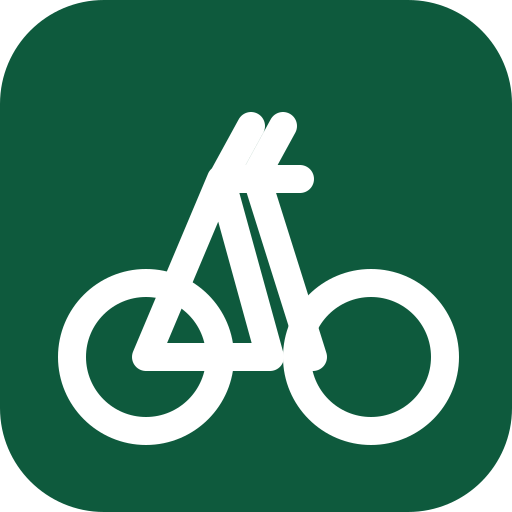

Bicycle Calorie Calculator
Estimate calories for a completed ride.
Results
- Average speed
- Total calories burned
- Calories due to riding
This is an estimate based on the original 1989 worksheet; it is not medical advice.

Estimate calories for a completed ride.
This is an estimate based on the original 1989 worksheet; it is not medical advice.